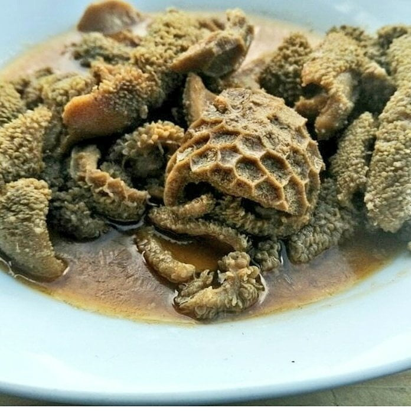

Tripe

Tripe recipe
Popular South African delicacy which is also known as ulusu, murhodu or inqwema
Ingredients
- Water
- Tripe
- Salt
- Spices
- Tomato
- Onion
Steps
- Wash tripe thoroughly
- Place tripe in the pot and put it on the hot stove
- Stir the tripe for it to cook evenly
- Cut tomato and onion into small pieces and put the mixture in the pot
- Add salt and/or spices and stir for ingredients to mix properly
- Pour water into the pot
- Allow the tripe to cook for 30 minutes
- Serve the dish